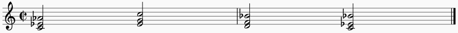

A work in progress dataset of Amateur MIDI Performances crowdsourced over the web.
This page allows you to contribute to the dataset by recording a short performance using any of your MIDI keyboard.
Read more about this project Here.
Your MIDI and survey data will be anonymized, preprocessed, and add to the dataset.
Please select a MIDI device
